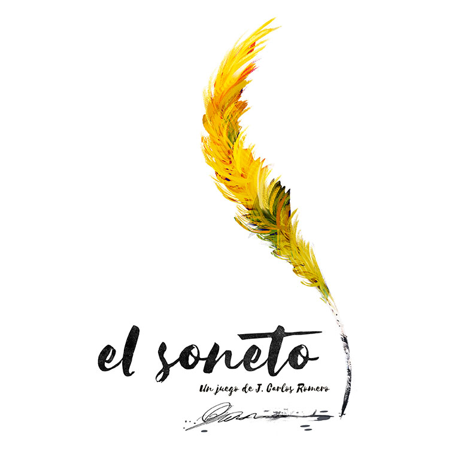
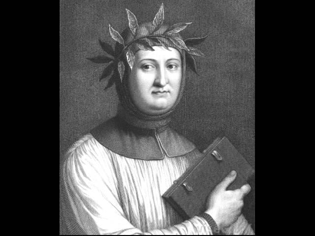
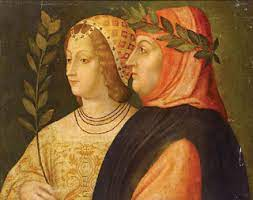

"Soneto a Laura"
Paz no encuentro ni puedo hacer la guerra,
y ardo y soy hielo; y temo y todo aplazo;
y vuelo sobre el cielo y yazgo en tierra;
y nada aprieto y todo el mundo abrazo.
Quien me tiene en prisión, ni abre ni cierra,
ni me retiene ni me suelta el lazo;
y no me mata Amor ni me deshierra,
ni me quiere ni quita mi embarazo.
Regresar al Index.